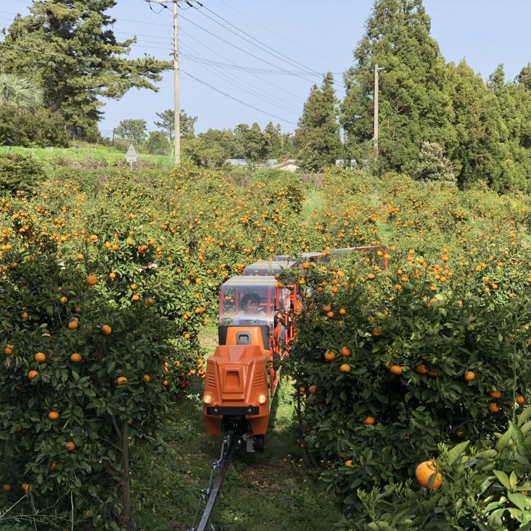

제주의 풍경
제주지도
축제와 행사
남원읍

사진 출처
[남원큰엉해변] https://www.visitjeju.net/kr/detail/view?contentsid=CNTS_000000000019750#
[가뫼물] https://www.visitjeju.net/kr/detail/view?contentsid=CONT_000000000500626#
[사라오름] https://www.visitjeju.net/kr/detail/view?contentsid=CONT_000000000500278#
[태흥포구] https://www.visitjeju.net/kr/detail/view?contentsid=CNTS_000000000020989#